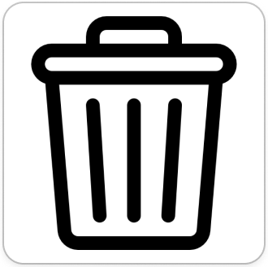

+
Date : 27 Oct 2024
Time : 01:39 A.M
Show my full schedule.
Task list
No
Task
Description
1.
Fetching Water
I have to go to fetch water from the stone thank and water means holy spirit from God.
Mark as complete
Add comment
Completed Tasks
Fetching Waterand goinf to school

Click to view history